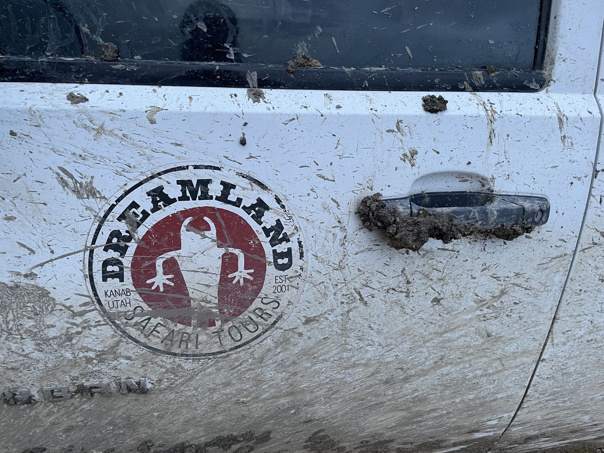

Yes, on open ground, and it can be the best day of your trip. Wet sandstone turns deep rust and gold, waterfalls run off the slickrock and the trails empty out. One rule is firm: when rain threatens, stay out of slot canyons and narrows, because a storm you cannot see or hear can flood them. Dress in a rain shell and layers that are not cotton, slow down on wet rock, and expect dirt roads to turn to mud.
What is the one rule?
When rain threatens, stay out of the narrows.
Slot canyons and narrows funnel water with astonishing speed. A storm miles away can send a wall of water through a canyon under blue sky. No photograph is worth it.
Canyons do not all carry the same risk. Buckskin Gulch drains a huge area of backcountry that you cannot see from the trailhead, and it offers almost no way out of the narrows, so we never run it with rain in the forecast. Peekaboo Slot Canyon near Kanab is short with a small catchment, and on some rainy days we do go. How to judge a canyon for flash floods explains the difference.
Flash floods are most common in the summer monsoon, roughly July through September. They can happen any time rain falls upstream.
Why can a rainy desert day be the best one?
- The colors deepen. Wet sandstone turns from pale tan to deep rust and gold.
- The crowds thin out. Fair-weather hikers stay home, and the trail and the viewpoints are often yours alone.
- Waterfalls appear. Rain running off the slickrock forms ribbons and pour-offs that are gone within hours of the sun coming back.
- The desert wakes up. Rain pulls a clean, mineral smell out of the ground and cools the air.
- The light turns dramatic. Moody clouds and shafts of sun make photographs you cannot get on a cloudless afternoon.
A sunny day in the desert is lovely. A rainy one is rare, and rare is worth showing up for.
What should I wear to hike in the rain?
You do not need expensive gear. You need the right layers and the discipline to skip cotton. From the skin out:
- A waterproof rain shell with a hood. It blocks rain and wind both, and it is the most useful thing you can bring. No rain jacket? A single-use poncho costs under $5 and works. Honey's grocery store in Kanab usually carries them.
- Rain pants. Wet legs chill most hikers first. A light, packable pair over your hiking pants is plenty.
- Layers that are not cotton. Wool or synthetic base layers keep you warm when damp. Cotton holds water and chills you.
- Closed-toe hiking shoes or boots with a grippy sole.
- A brimmed hat. It keeps rain out of your eyes far better than a hood alone.
- A way to keep gear dry. A pack cover or a few zip-top bags for your phone, camera and spare layer.
- In winter and the shoulder seasons: gloves, a warm hat and one more insulating layer. Desert temperatures drop fast when the sun goes behind clouds.
Dress a touch warmer than you think you need. You can always take a layer off. You cannot put on one you left in the car.
How do I walk on wet slickrock and mud?
- Mind your footing. Wet sandstone gets slick, and mud hides loose rock. Slow down, shorten your stride and watch where each foot lands.
- Use trekking poles.
- Keep drinking. Cool, cloudy air hides how much water you still lose. Drink on your normal schedule.
- Decide early that a little rain is part of the adventure. The hikers who do have the best time.
What happens to the roads?
Many trailheads here sit at the end of dirt roads.
- Clay turns to glue. House Rock Valley Road, the way to Wire Pass and Buckskin Gulch, is usually passable in a two-wheel-drive car with decent clearance. Wet, it can become impassable to just about any vehicle. The mud is extremely slippery and sticky, and people get stuck.
- Washes run across roads. Do not drive through flowing water. Wait, or choose another route.
- Be ready to wait it out. Expect no phone service. Carry water and blankets, and be able to change your own tire.

What if I am booked on a Dreamland tour and it rains?
Your tour is almost certainly still on. We run rain or shine, in every season. What changes on a wet day is how your guide shapes the day: the route, the timing and the destination.
- Whether a tour runs, changes route or is called off for weather is a safety call that we make, and it can come as late as the morning of your tour.
- A reroute to a safer destination is still your tour, and it does not come with a refund.
- If we cancel, you get a full refund.
The full wording is on our cancellation and weather policy page.
Is it safe to hike slot canyons in the rain?
No. Slot canyons and narrows carry a serious flash flood risk when rain is in the area, even from a storm you cannot see. Choose open country and higher ground instead.
Is the desert slippery when it rains?
Wet sandstone and slickrock do get slick, and trails can turn muddy. Slow down, shorten your stride and wear shoes with good traction.
When is flash flood season in southern Utah?
Roughly July through September, during the summer monsoon. Floods can still happen any time rain falls upstream, even far from where you stand. Before any trip into the Paria or Buckskin drainage, check pariafloodmonitor.com.
Where this comes from
- Dreamland Safari Tours, How to Hike in the Rain in Southern Utah (and Why a Wet Day Can Be the Best One), November 22, 2026.
- Andrea Jasper, Hiking Buckskin Gulch, October 4, 2020 (House Rock Valley Road).
- Dreamland Safari Tours, Shock and awe: Flash floods in the desert, February 15, 2022 (washes and roads).